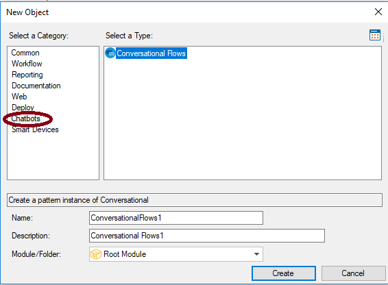
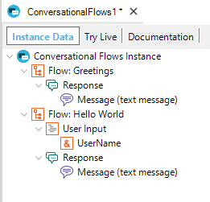

It's used to define the dialog of a conversational bot, to be generated by the Chatbot generator. In the New object dialog, it's under the Chatbots category:  The default ConversationalFlow instance looks as follows:  The main element of the Conversational Flows instance structure is the Flow. See alsoHowTo: Build a chatbot using GeneXus
|